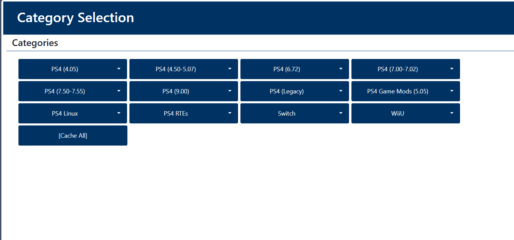
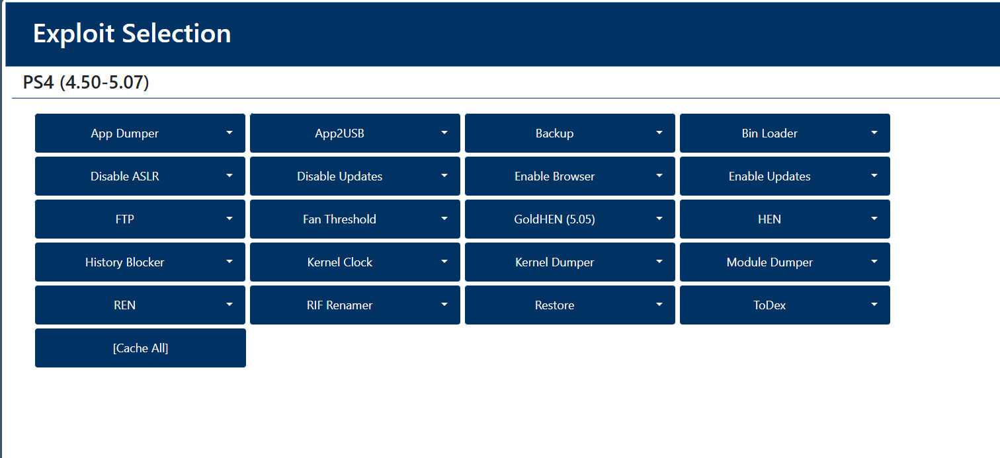
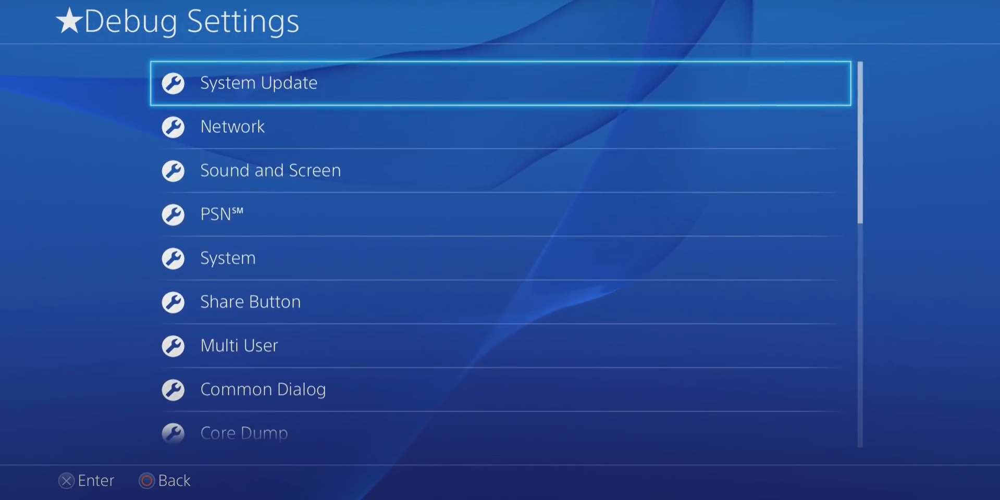
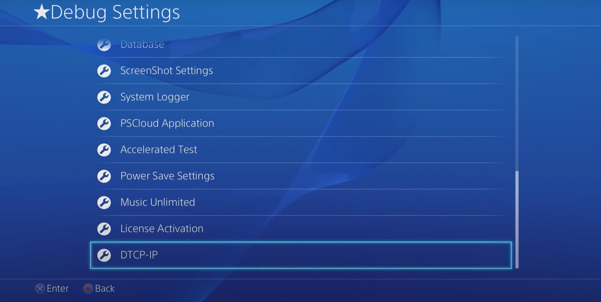

Rehber
Uyarı!
Bu kısımda alacağınız risk ve olası durumda konsolunuza gelecek zarar tamamen sizin sorumluluğunuzdadır.
Bu işlem cihazınızı garanti kapsamından çıkarabilir.
Korsancılık
Bu işlem sonucunda oyunları korsan oynayabilirsiniz fakat bu emeğe saygısızlıktır bu nedenle oyunları her zaman satın alın! Bu amaç haricinde biz Debug Menu elementlerini gözlemleyeceğiz.
Nasıl Yapılır?
Eğer elinizde bir Playstation 4 varsa ve sürümü 11.00 ve altındaysa jailbreak yapabilir ve Debug Menu'ya erişebilirsiniz.
İlk olarak konsolunuzun sürümünü öğrenmeli ve bu sürümün üzerindeki en kararlı sürüme güncellemelisiniz. Bunun için "Ayarlar/Sistem/Sistem Bilgileri/Sistem Yazılımı" kısmına gidebilirsiniz.
Listedeki sürümlerden birine güncelledikten sonra Sony sunucularını bloklamak için DNS adresi değiştirmeliyiz. Bu işlemdeki amaç güncelleme almaktan kaçınmak çünkü Playstation 4 arka planda sunucudan yeni bir güncelleme alırsa indirebilir ve bu işlemi yapamayız. Bunun için "Ayarlar/Ağ/İnternet Bağlantısını Ayarla/Wifi-LAN/Özel/"Ağ Adı"/"Ağ Şifresi"/DNS Ayarları" Manuel olarak girmeliyiz.
Bu işlem sonucunda eğer "Ayarlar/Kullanım Kılavuzu"na girerseniz sizi bir Exploit Host karşılar. Dilerseniz farklı bir host ile devam edebilirsiniz.
Ardından kategorilerden kendinize uygun sürümü seçebilirsiniz. Ya da görüldüğü gibi bir Linux çalıştırabilirsiniz.
Burada bu jailbreak ile çalışan çeşitli araçlar karşımıza çıkıyor. Bunlardan birkaçını gözden geçirelim.
HEN(Homebrew Enabler) jailbreak işlemi için seçilir. Daha güncel ve modifiye edilmiş olan GoldHEN önerilir. Ayrıca yukarıda sıralanan araçları kullanmak için HEN çalıştırılmalıdır. Homebrew Enabler seçildikten sonra "out of memory" hatası alınabilir, görmezden gelip sayfayı yeniden yüklemeliyiz. Bu işlemin ardından Ayarlar menüsünde Debug Settings'i görebiliriz. Eğer GoldHEN uygulandıysa Ayarlar/GoldHEN içinde bulunur.

Görüldüğü üzere sistemin izin vermediği araçlara erişilebilir. Burada gözükmeyen bazı araçlarda diğer versiyonlarda eklenmiştir.
Burada gözükmeyen bir diğer araç Package Installer, exFAT formatında bir depolama aygıtından .pkg uzantılı oyun veya uygulamaları yükler. İşte bu araç korsan oyun oynama imkanını tanır. Fakat bunun haricinde bir çok araç mevcuttur.
Ayrıca burada gözükmese de root dizininde okuma ve yazma işlemi yapılabilir. Bunun için çeşitli araçlar geliştirilmiştir. Örneğin Lapy tarafından geliştirilen PS4-Xplorer aracı ile ya da FTP ile bu işlem yapılır.